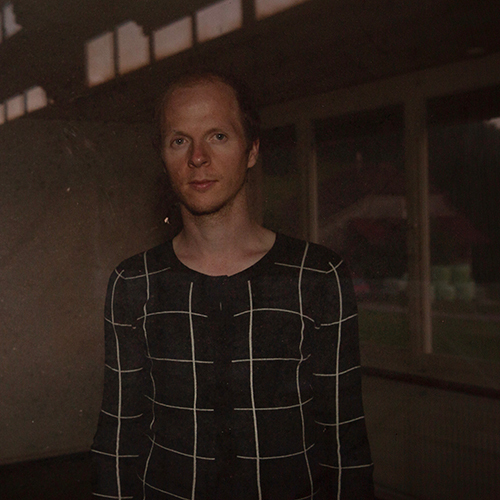

#otherbeats
Marcel Zaes
Brown University
Marcel Zaes (b. 1984 in Bern, Switzerland), is a performer-composer, artist, and artistic researcher. He holds an M.A. in Music & Media Arts from Bern University of the Arts, an M.A. in Music Composition from Zurich University of the Arts and has additionally completed composition studies with Alvin Curran in Rome and with Peter Ablinger in Berlin. Currently, he is pursuing his Ph.D. in Music & Multimedia Composition at Brown University. Marcel explores rhythm in an interdisciplinary framework that encompasses its socio-cultural backgrounds, its politics and perception, and the use of mechanical rhythm machines in music making – such as metronomes, drum machines and step sequencers. Marcel creates textures and beats that emerge as installation pieces, sound performances, concert music for ensembles or as electronic solo performances. For his work, Marcel Zaes has been awarded a number of grants and prizes, has played numerous concerts and taken part in group exhibitions internationally, has repeatedly been an artist in residence and has had his works performed by ensembles internationally. To date, he has published ten albums with Tonus Music Records, Dumpf Edition and Prefermusic, and his 2020 Yarn/Wire album is forthcoming with Editions Verde in New York.
For #otherbeats, Marcel Zaes prompted contributors across the world to send him homemade beats, “alternative” metronomes and skewed pulses, recorded from their shelter-in-place locations with lo-fi gear. This archive of rhythm collected via social networks is displayed in a web arts project: an experimental ‘space’ that lives on a website and makes sound. The piece is involved with different notions of ‘time grids.’ Using human ‘data’ for an internet-driven sound project leaves the listener with an ambiguous sonic world that oscillates between periodicity, rhythmic deviance, and what might be called a defiant networked system of arbitrary connections. #otherbeats reflects on contemporary scholarly discourses on notions of ‘technological/techno’ and ‘organic,’ of ‘grids as resistance’ and ‘otherness,’ ‘broken’ and ‘failure,’ and it does so by loosely referring to the queer, African American musical undergrounds of the 1970 via its visual language, thereby acknowledging how deeply dance music rhythms are owed to white cultural appropriation from these scenes. Zaes, by way of designing ‘alternate’ systems of networked time grids, proposes an idiosyncratic mode of thinking ‘time grids’ in digital, networked electronic music performance. #otherbeats might be neither ‘techno’ nor ‘organic,’ but in fact, both. The piece is made exclusively with the Web Audio API/JavaScript under HTML5 and uses merely filtering, convolution reverb, synthesis, compression and live mixing as its techniques. #otherbeats takes on to ‘democratize’ electronic music and sound art since it replaces expensive and specialized software at elite institutions with tools as cheap, ubiquitous and ‘accessible’ as the web browser.